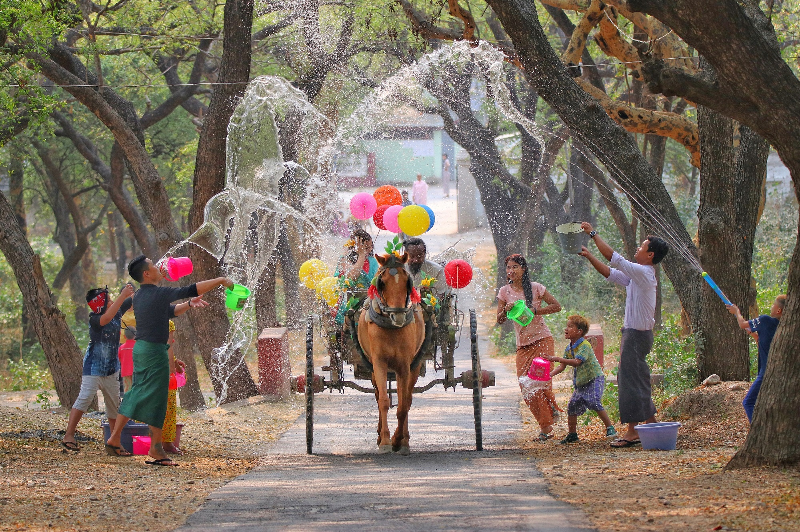

佛教文化
缅甸是上座部佛教核心传播地，89%以上人口信奉佛教，佛教文化渗透到生活方方面面。仰光大金塔高98米，塔身贴满金箔，塔顶镶嵌76克拉钻石和数干颗红蓝宝石，是缅甸的精神象征；每个村镇都有佛塔，男性一生至少出家一次，成为缅甸独特的文化传统。

传统节日
泼水节（Thingyan）是缅甸最盛大的缅历新年庆典，每年4月13-16日举行。节日期间，全国放假，人们走上街头互相泼水祈福，寓意洗去过往的烦恼与不顺；除泼水外，还有舞龙舞狮、传统歌舞表演、布施僧侣等活动，仰光、曼德勒等城市会举办大型庆祝晚会。